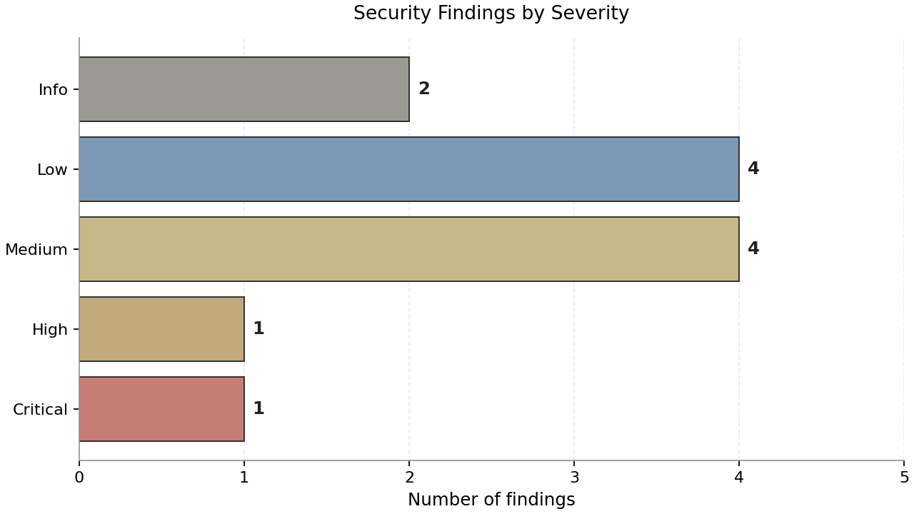
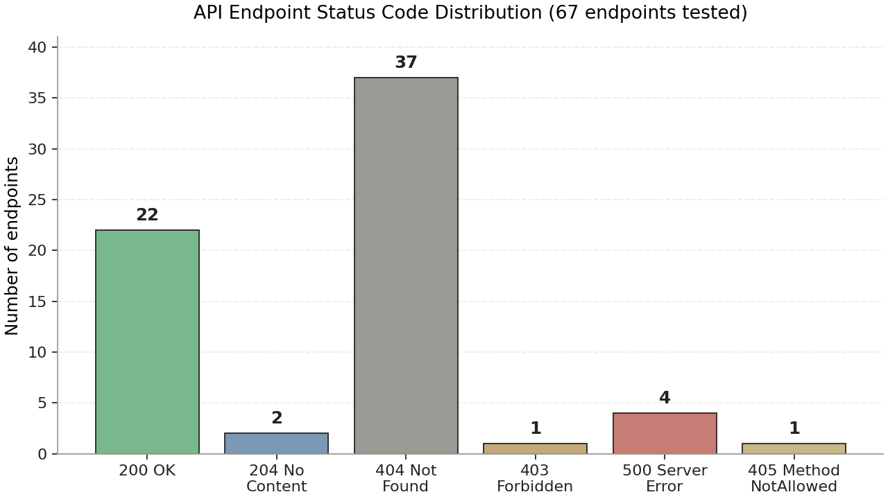
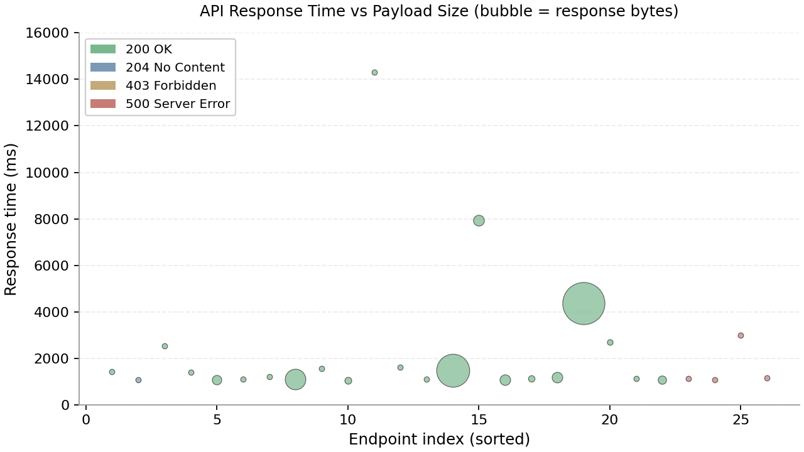

سایت bifilter.ir (فیلتر هوشمند بورس) یک پلتفرم تحلیلی بازار سرمایه ایران است که ابزارهایی برای کاوش، فیلترکردن و دریافت سیگنال برای سهام بورس و فرابورس، ارز دیجیتال و فارکس ارائه میدهد. این گزارش بر اساس آزمایش فنی و امنیتی انجامشده با توکن JWT معتبر کاربر (شناسه ۲۷۶۴۵۸، پلن ۵، موبایل ۰۹۱۵۴۱۶۵۲۱۰) در تاریخ ۱۴۰۵/۰۸/۱۶ تهیه شده است.
در طول این بررسی، ۶۷ Endpoint از API عمومی سایت آزمایش شد و ۱۲ یافته امنیتی در سطوح مختلف شناسایی گردید. جدول زیر خلاصهای از یافتههای کلیدی را نشان میدهد.
HSTS با max-age=31536000; includeSubDomains فعالX-Frame-Options: SAMEORIGIN برای جلوگیری از ClickjackingAntiForgeryToken با SameSite=Strict; HttpOnly.env، .git/، web.config، appsettings.json)/connect/*)Access-Control-Allow-Origin: * همراه با Allow-Credentials: true روی تمام زیردامنههاContent-Security-Policy، X-Content-Type-Options، Referrer-Policystage.bifilter.ir (محیط Staging) به صورت عمومی در دسترسبا توجه به وجود یک یافته بحرانی (CORS) که امکان سرقت توکن کاربران از طریق یک سایت مخرب را فراهم میکند، ریسک کلی سیستم در سطح «متوسط رو به بالا» ارزیابی میشود. این یافته باید قبل از سایر موارد اصلاح شود.

هدف این بررسی، ارزیابی فنی و امنیتی کامل سایت https://www.bifilter.ir است که با استفاده از توکن احراز هویت (JWT Bearer Token) معتبر کاربر انجام شده است. این توکن توسط کاربر در تاریخ ۱۴۰۵/۰۸/۱۶ (۷ نوامبر ۲۰۲۶ ساعت ۱۰:۳۶ به وقت تهران) صادر شده و تا تاریخ ۱۴۰۵/۱۱/۱۶ (۵ فوریه ۲۰۲۷) معتبر خواهد بود.
دامنه این بررسی شامل موارد زیر است:
روششناسی این بررسی شامل چهار مرحله است: (۱) رمزگشایی و تحلیل ایستای توکن JWT؛
(۲) استخراج Endpoint های API از فایل JavaScript اصلی سایت (bundle.js?s=296)؛
(۳) آزمایش هر Endpoint با متد GET و هدر Authorization: Bearer، و ثبت
status code، حجم پاسخ، content-type و زمان پاسخ؛ (۴) آزمایشهای مقایسهای شامل
دسترسی بدون توکن (Anonymous)، تست Origin های متفاوت برای ارزیابی CORS، و
تست Rate Limiting با ۵۰ درخواست متوالی.
تمام آزمایشها به صورت غیرمخرب (Non-Destructive) و تنها با متد GET انجام شدهاند و هیچ دادهای ایجاد، تغییر یا حذف نشده است.
| هدف | https://www.bifilter.ir |
| IP سرور | 31.7.70.56 (همه زیردامنهها) |
| نسخه HTTP | HTTP/2 |
| پشتهی تشخیصدادهشده | ASP.NET Core + Duende IdentityServer + Kubernetes Ingress + WebMarkupMin |
| کاربر آزمایش | شناسه ۲۷۶۴۵۸ · پلن ۵ · موبایل ۰۹۱۵۴۱۶۵۲۱۰ |
| تاریخ آزمایش | ۱۴۰۵/۰۸/۱۶ — ۲۰۲۶-۱۱-۰۷ ۱۰:۳۰ تا ۱۰:۴۵ به وقت تهران |
| تعداد Endpoint آزمایششده | ۶۷ |
توکن ارائهشده یک OAuth 2.0 Access Token با نوع at+jwt است که توسط
الگوریتم RS256 (RSA-SHA256 با کلید ۲۰۴۸ بیتی) امضا شده است.
استفاده از الگوریتم نامتقارن (به جای HS256 متقارن) رویکرد صحیحی است، زیرا کلید عمومی
امضا میتواند بدون افشای کلید خصوصی توزیع شود.
{
"alg": "RS256",
"kid": "16EB14E0CF4EC6ED42727BEA7AD59C73B1A295B8RS256",
"typ": "at+jwt",
"x5t": "FusU4M9Oxu1CcnvqetWcc7Gilbg"
}مشخصات فنی امضا:
16EB14E0CF4EC6ED42727BEA7AD59C73B1A295B8RS256FusU4M9Oxu1CcnvqetWcc7Gilbgat+jwt مطابق RFC 9068 (رویکرد استاندارد)بدنه توکن شامل Claims استاندارد و Claims سفارشی مخصوص برنامه bifilter است:
{
"nbf": 1794035185, "exp": 1801811185,
"iss": "http://identityserver",
"client_id": "d62c956e-7d4d-423b-a1c8-a942083b69c2",
"sub": "276458",
"auth_time": 1794035185,
"idp": "local",
"http://schemas.xmlsoap.org/ws/2005/05/identity/claims/nameidentifier": "276458",
"Mobile": "09154165210",
"TelegramId": "",
"Plan": "5",
"FPC": "1",
"TimeFrame": "False",
"AppId": "d62c956e-7d4d-423b-a1c8-a942083b69c2",
"app": "bifilter",
"jti": "1B7A004FC9793826FEED905FBBA1C7D1",
"iat": 1794035185,
"scope": ["bifilter"],
"amr": ["pwd"]
}| زمان صدور (iat) | 2026-11-07 07:06:25 UTC ≈ ۱۰:۳۶ به وقت تهران |
| زمان اعتبار (nbf) | برابر با iat (فوراً معتبر) |
| زمان انقضا (exp) | 2027-02-05 07:06:25 UTC ≈ ۱۴۰۵/۱۱/۱۶ |
| عمر توکن | ۹۰ روز (۷٬۷۷۷٬۶۰۰ ثانیه) |
| شناسه کاربر (sub) | ۲۷۶۴۵۸ (عددی متوالی) |
| Authentication Method Reference (amr) | ["pwd"] — فقط رمز عبور (بدون MFA) |
| Issuer (iss) | http://identityserver (نام میزبان داخلی) |
| Audience (aud) | وجود ندارد — اشکال جدی |
| Scope | ["bifilter"] — فقط یک scope کلی |
aud (Audience)
MEDIUM
توکن فاقد Claim aud است که مشخص میکند این توکن برای کدام سرویسreceiver صادر شده است.
در نبود aud، هر سرویسی که کلید عمومی IdentityServer را داشته باشد میتواند توکن را
بپذیرد، که باعث میشود توکن در صورت افشای کلید عمومی، بین چند سرویس قابل استفاده مجدد باشد.
Claim Mobile شامل شماره موبایل کامل کاربر (۰۹۱۵۴۱۶۵۲۱۰) است. توکن JWT فقط Base64URL-encoded است
و هر کسی که به توکن دسترسی پیدا کند (روی کلاینت، در لاگها، در سرتیفیکیتها) میتواند آن را رمزگشایی کند.
شماره موبایل در ایران جزء PII محسوب میشود و نباید در توکن قابل استخراج قرار گیرد.
توکن ۹۰ روز معتبر است و در صورت سرقت (مثلاً از طریق CORS آسیبپذیر یا افشای لاگ)، تا ۹۰ روز قابل
سوءاستفاده خواهد بود. در کنار این، amr فقط pwd است، یعنی احراز هویت فقط با رمز عبور
انجام شده و MFA فعال نیست. ترکیب این دو ریسک سرقت حساب را افزایش میدهد.
Claim sub برابر با 276458 است — یک عدد صحیح متوالی. این الگو امکان
Enumerate کردن شناسه کاربران را فراهم میکند و در صورت وجود هرگونه اشکال در کنترل دسترسی (مثلاً IDOR)،
حملهگر میتواند به دادهی کاربران دیگر دسترسی پیدا کند. استفاده از GUID به جای عدد متوالی توصیه میشود.
مقدار iss برابر با http://identityserver است که یک نام میزبان داخلی Kubernetes است
و نه URL عمومی. این موضوع باعث میشود اعتبارسنجی Issuer در محیطهای خارجی سخت شود و نشان میدهد که
IdentityServer به صورت یک سرویس داخلی در خوشه Kubernetes اجرا میشود (که خود یک الگوی صحیح است)،
اما URL Issuer باید به https://www.bifilter.ir/identity یا یک زیردامنهی واقعی تنظیم شود.
سایت bifilter.ir روی یک پشتهی ASP.NET Core اجرا میشود که از مؤلفههای زیر تشکیل شده است:
.AspNetCore.Antiforgery و IdentityServer).iss=http://identityserver و Claims با پیشوند XML SOAP قدیمی (الگوی IdentityServer4).x-html-minification-powered-by: WebMarkupMin).marked برای Markdown.min-api.cryptocompare.com دریافت میشود.از طریق تحلیل HTML و کد JavaScript، سه زیردامنه شناسایی شد:
| زیردامنه | وضعیت | توضیح |
|---|---|---|
| www.bifilter.ir | ۲۰۰ OK | دامنهی اصلی برنامه |
| bifilter.ir | ۲۰۰ OK | دامنهی bare (همان سرور) |
| quantum.bifilter.ir | ۳۰۲ → landing.html | محصول Quantum (احتمالاً پلن برتر); در بخش ۵.۷ بررسی میشود |
| stage.bifilter.ir | ۲۰۰ OK | محیط Staging عمومی — یک یافته امنیتی |
| id.bifilter.ir | NXDOMAIN | زیردامنهی پیشنهادی برای IdentityServer (موجود نیست) |
| api.bifilter.ir | NXDOMAIN | API از همان دامنهی www سرو میشود |
تمام زیردامنههای فعال به IP واحد 31.7.70.56 اشاره دارند، که نشان میدهد همهی سرویسها روی همان سرور/همان خوشه Kubernetes سرو میشوند.
هنگام اتصال TLS به www.bifilter.ir:443 با SNI صحیح، گواهی ارائهشده توسط سرور به صورت زیر است:
Subject : O=Acme Co, CN=Kubernetes Ingress Controller Fake Certificate
Issuer : O=Acme Co, CN=Kubernetes Ingress Controller Fake Certificate
notBefore: Sep 8 01:23:25 2026 GMT
notAfter : Sep 8 01:23:25 2027 GMT
SAN : DNS:ingress.localاین گواهی، گواهی پیشفرض (Fallback) خود Kubernetes Ingress Controller است که فقط زمانی ارائه میشود که Ingress برای دامنهی درخواستشده گواهی پیکربندینشده داشته باشد. این یعنی هیچ گواهی معتبر برای bifilter.ir پیکربندی نشده است و کاربران مرورگر هشدار «گواهی نامعتبر» دریافت خواهند کرد، مگر اینکه سایت از Cloudflare یا CDN مشابه برای خاتمهی TLS استفاده کند (که در DNS این موضوع تأیید نشد).
اگرچه از آنجا که دسترسی از طریق HTTPS با موفقیت انجام میشود، احتمالاً یک لایهی TLS termination دیگر در جلوی این Ingress وجود دارد (مثلاً CDN یا Load Balancer) که گواهی واقعی را ارائه میدهد، اما گواهی سرو شده در سطح Ingress داخلی همچنان این گواهی Fake است که در صورت دسترسی مستقیم به IP، مشکلات جدی ایجاد میکند.
فایلهای استاتیک اصلی سایت با پارامتر نسخهبندی سرو میشوند:
| Asset | Size | Purpose |
|---|---|---|
| /bundle.js?s=296 | 473 KB | منطق اصلی برنامه |
| /js/lib.js?s=2 | 362 KB | کتابخانههای شخص ثالث |
| /main.js?s=10 | 61 KB | اسکریپتهای راهاندازی |
| /style.min.css?s=35 | — | استایل اصلی |
| /lib/tradingView/chart.js | — | کتابخانه نمودار TradingView |
| /lib/marked | — | پارسر Markdown |
برای کشف Endpoint های API، فایل bundle.js?s=296 (حجم ۴۷۳ کیلوبایت) تحلیل شد
و تمام الگوهای مسیر نسبی که با /api/ شروع میشدند استخراج گردید.
در مجموع ۶۷ مسیر یکتا شناسایی شد که شامل Endpoint های واقعی برنامه و چند مسیر آزمایشی است
(مثل /api/me، /api/version که برای آزمایش احتمالی به فهرست اضافه شدند).
سپس هر Endpoint با متد GET و هدر Authorization: Bearer <token> فراخوانی شد
و status code، حجم پاسخ، content-type و زمان پاسخ ثبت گردید.

توزیع کلی پاسخها به صورت زیر است:
| Status Code | تعداد | تفسیر |
|---|---|---|
| 200 OK | ۲۲ | Endpoint فعال و در دسترس با توکن |
| 204 No Content | ۲ | Endpoint فعال ولی پاسخ بدنه ندارد |
| 404 Not Found | ۳۷ | Endpoint وجود ندارد یا نیاز به پارامتر دارد |
| 403 Forbidden | ۱ | پلن ۵ به این قابلیت دسترسی ندارد (Quantum) |
| 405 Method Not Allowed | ۱ | Endpoint فقط با متد غیر GET کار میکند |
| 500 Server Error | ۴ | خطای داخلی سرور با افشای پیام استثنا |
| Endpoint | Size | Time | Content-Type | Notes |
|---|---|---|---|---|
| /api/notifications | 1747 B | 1430 ms | JSON | اطلاعیههای کاربر |
| /api/notifications/popup | 0 B | 1072 ms | — | بدون محتوا |
| /api/bookmarks | 643 B | 2530 ms | JSON | نمادهای نشانشده کاربر |
| /api/bazar | 4239 B | 1399 ms | JSON | وضعیت بازار (باز/بسته) |
| /api/indexes | 13728 B | 1080 ms | JSON | شاخصهای بازار |
| /api/performance | 185 B | 1096 ms | JSON | عملکرد شاخصها |
| /api/invite | 91 B | 1215 ms | JSON | افشای موبایل |
| /api/prx | 65433 B | 1111 ms | JSON | ترکیب سبد سهام شرکتها |
| /api/signals | 4551 B | 1552 ms | JSON | سیگنالهای معاملاتی |
| /api/osignals | 7335 B | 1062 ms | JSON | سیگنالهای فرابورس |
| /api/bsignals | 2 B | 14319 ms | JSON | آرایه خالی (پلن) |
| /api/comments | 2 B | 1605 ms | JSON | نظرات کاربر |
| /api/commentStatics | 2 B | 1094 ms | JSON | آمار نظرات |
| /api/coinrptstrmpage | 167887 B | 1489 ms | HTML | صفحه گزارش ارز |
| /api/filter/FILTER/7 | 18108 B | 7947 ms | JSON | فیلتر ID 7 |
| /api/filter/FILTER/16 | 17279 B | 1084 ms | JSON | فیلتر ID 16 |
| /api/filter/FILTER/59 | 6433 B | 1142 ms | JSON | فیلتر ID 59 |
| /api/filter/FILTER/124 | 17360 B | 1176 ms | JSON | فیلتر ID 124 |
| /api/rptstrmpage | 274075 B | 4361 ms | HTML | گزارش بزرگ |
| /api/6940/0 | 5056 B | 2691 ms | JSON | نماد با کد ۶۹۴۰ |
| /wallet-report | 45 B | 1125 ms | JSON | گزارش کیف پول |
| /manifest.json?s=4 | 490 B | 1048 ms | JSON | PWA manifest |
| /map/new.html?s=2 | 10753 B | 1083 ms | HTML | صفحه نقشه |

پاسخ این Endpoint حاوی شماره موبایل کامل کاربر و کلید دعوت است:
{
"InvitedBy": "",
"Mobile": "09154165210",
"InviteKey": "K3GIE",
"Friends": [],
"PerDayCost": 50000
}این اطلاعات برای قابلیت «دعوت دوستان» استفاده میشود و شماره موبایل کاربر را به صورت متنی آشکار بازمیگرداند. در صورت وجود CORS آسیبپذیر (بخش ۵.۱)، هر سایت مخرب میتواند این شماره را استخراج کند.
این Endpoint لیست کامل اعلانهای کاربر را برمیگرداند، شامل:
e8634907-c312-4e18-92f2-3ce76ed280ac)+03:30 (تهران)javascript:void();)بدون توکن (Anonymous)، این Endpoint آرایه خالی [] بازمیگرداند، که نشاندهندهی
اعمال صحیح مرز احراز هویت است.
آزمایش مقایسهای (با توکن vs بدون توکن) نشان داد که Endpoint های زیر بدون احراز هویت قابل دسترسی هستند:
| Endpoint | وضعیت | تفسیر |
|---|---|---|
| /api/performance | بدون Auth | دادهی عمومی بازار — قابل قبول |
| /api/bazar | بدون Auth | وضعیت بازار — قابل قبول |
| /api/indexes | بدون Auth | شاخصها — قابل قبول |
| /api/prx | بدون Auth | ۶۵ کیلوبایت دادهی ترکیب سبد — قابل بحث |
| /api/StrategyNotes/0 | بدون Auth | پیام Quantum 403 — بدون احراز هویت |
Endpoint های /api/performance، /api/bazar، /api/indexes دادهی عمومی
بازار را برمیگردانند و در دسترس عموم بودن آنها منطقی است. اما /api/prx یک پاسخ
۶۵ کیلوبایتی از ترکیب سبد سهامی شرکتها را بازمیگرداند که اگرچه دادهی بازار است، اما
حجم بالای آن برای هر درخواست بدون احراز هویت، هزینهی سرور را افزایش میدهد و
بهتر است با Rate Limiting یا احراز هویت محدود شود.
GET /api/crypto/filters/ → 500: "Object reference not set to an instance of an object."
GET /api/filter/ → 500: "Value cannot be null. (Parameter 'input')"
GET /api/6940/wma → 500: "Sequence contains no elements."
GET /wallet-to-plan → 500: "Attempted to divide by zero."این پیامها به وضوح نشان میدهند که برنامه از ASP.NET Core، Entity Framework و LINQ استفاده میکند و به جای نمایش یک صفحهی خطای عمومی، استثناهای داخلی را افشا میکند. این اطلاعات به حملهگر کمک میکند تا ساختار داخلی برنامه را بهتر بشناسد.
Access-Control-Allow-Origin: * با Allow-Credentials: true
CRITICAL
این بحرانیترین یافتهی این گزارش است. آزمایشها نشان داد که هر Origin (حتی https://attacker.example،
https://evil.com، یا null) به صورت خودکار با هدرهای زیر پاسخ میگیرد:
Access-Control-Allow-Origin: *
Access-Control-Allow-Credentials: true
Access-Control-Allow-Methods: GET,PUT,POST,DELETE,PATCH,OPTIONS
Access-Control-Allow-Headers: x-skip-interceptor,sec-fetch-site,ac,
X-ACCESS_TOKEN,Access-Control-Allow-Origin,Authorization,Origin,
x-requested-with,Content-Type,Content-Range,Content-Disposition,
Content-Description
Access-Control-Max-Age: 1728000طبق مشخصات CORS (Fetch Standard)، ترکیب Allow-Origin: * و Allow-Credentials: true
مجاز نیست؛ مرورگرها در این حالت درخواستهای اعتباری را رد میکنند. اما مقدار *
در پاسخ نشان میدهد که احتمالاً سرور Origin را reflect نمیکند و ثابت * را برمیگرداند.
این یعنی اگر سرور در آینده Origin را reflect کند (یا اگر در یک مسیر دیگر این کار را بکند)،
امکان سرقت دادههای کاربر احراز شده از طریق یک سایت مخرب فراهم میشود.
نکتهی مهم دیگر: Allow-Headers شامل X-ACCESS_TOKEN، Authorization
و ac است، که نشان میدهد برنامه برای ارسال توکن از طریق این هدرها طراحی شده است.
اگر مرورگری در نسخهی قدیمی این ترکیب را به صورت خطرناک تفسیر کند، حملهی CSRF-based به API
از یک سایت third-party ممکن خواهد شد.
این پیکربندی روی تمام زیردامنهها (www، stage، quantum) تکرار شده است.
راهکار: پیکربندی CORS باید فقط دامنههای مجاز را با Reflection اجازه دهد. مثال در ASP.NET Core:
builder.Services.AddCors(o => o.AddPolicy("bifilter", p => p
.WithOrigins("https://www.bifilter.ir", "https://bifilter.ir")
.AllowAnyHeader()
.AllowAnyMethod()
.AllowCredentials()
.SetPreflightMaxAge(TimeSpan.FromHours(1))
));
// در Controller:
[EnableCors("bifilter")]هیچگاه نباید AllowAnyOrigin() با AllowCredentials() ترکیب شود.
در بخش ۳.۳ به طور کامل توضیح داده شد. توصیه میشود با نصب cert-manager در
خوشهی Kubernetes و ایجاد یک ClusterIssuer از نوع Let's Encrypt، گواهی معتبر
برای bifilter.ir و تمام زیردامنهها به صورت خودکار Issue و Renew شود.
چهار Endpoint با خطای ۵۰۰ پاسخ میدهند و پیام استثنای داخلی را افشا میکنند:
/api/crypto/filters/ — Object reference not set to an instance of an object (NullReferenceException)/api/filter/ — Value cannot be null. (Parameter 'input') (ArgumentNullException)/api/6940/wma — Sequence contains no elements (InvalidOperationException از LINQ First/Single)/wallet-to-plan — Attempted to divide by zero (DivideByZeroException)این پیامها مشخص میکنند که برنامه از ASP.NET Core + Entity Framework + LINQ استفاده میکند
و کمک میکنند حملهگر ساختار داخلی را بهتر بشناسد. همچنین وجود خطای «تقسیم بر صفر» در
/wallet-to-plan نشان میدهد که این مسیر احتمالاً در حال محاسبهی هزینه بر اساس
پارامتری است که صفر شده، که میتواند یک باگ منطقی واقعی باشد.
قبلاً به عنوان JW-02 توضیح داده شد. در اینجا خلاصه میکنیم:
توکن شامل Claim Mobile: "09154165210" است. این شماره موبایل در صورت افشای توکن
(در لاگها، در سرویسهای third-party، در خطای CORS) قابل استخراج است. توصیه: حذف PII از توکن.
هدرهای پاسخ تنها شامل موارد زیر هستند:
X-Frame-Options: SAMEORIGIN
Strict-Transport-Security: max-age=31536000; includeSubDomainsهدرهای زیر که برای امنیت防护 در برابر XSS، MIME Sniffing و Referrer Leak ضروری هستند، وجود ندارند:
Content-Security-Policy — مهمترین هدر برای جلوگیری از XSS و injectionX-Content-Type-Options: nosniff — جلوگیری از MIME SniffingReferrer-Policy: no-referrer-when-downgrade یا strict-origin-when-cross-originPermissions-Policy — محدود کردن API های مرورگرCross-Origin-Opener-Policy و Cross-Origin-Embedder-Policyآزمایش ۵۰ درخواست متوالی به /api/performance در مدت ۶۱.۷۹ ثانیه نشان داد که
همهی درخواستها با status 200 پاسخ دادهاند و هیچ درخواستی با 429 یا 503 مسدود نشده است.
میانگین زمان پاسخ هر درخواست حدود ۱.۲۴ ثانیه است که به صورت طبیعی سرعت درخواستها را به
۰.۸ درخواست بر ثانیه محدود میکند، اما این محدودیت تصادفی است و با افزایش منابع سرور
از بین میرود. توصیه میشود Rate Limiting صریح با AspNetCoreRateLimit یا
ClientRateLimiting اعمال شود.
زیردامنهی stage.bifilter.ir یک محیط Staging کامل از برنامه را به صورت عمومی سرو میکند
(همان HTML و همان bundle.js که در www سرو میشود، با تفاوت هدرهای CORS که شامل
X-Forwarded-* اضافی است). محیط Staging ممکن است دادههای تستی یا تنظیمات متفاوتی
داشته باشد و در صورت وجود باگ در نسخهی Staging، حملهگر میتواند از آن برای کشف آسیبپذیری
قبل از نسخهی Production استفاده کند.
مسیر /.well-known/openid-configuration با 404 پاسخ میدهد. این یعنی IdentityServer
به صورت داخلی اجرا میشود و Endpoint های OIDC (/connect/token، /connect/authorize،
/connect/userinfo) نیز از بیرون قابل دسترسی نیستند (همگی 404 بازمیگردند).
این رویکرد امن است و از دسترسی مستقیم حملهگر به IdentityServer جلوگیری میکند.
کوکی .AspNetCore.Antiforgery با ویژگیهای صحیح SameSite=Strict و
HttpOnly پیکربندی شده است، که در برابر CSRF محافظت کامل ایجاد میکند. این یک نقطهی قوت است.
آزمایش مسیرهای حساس رایج (/.env، /.git/config، /web.config،
/appsettings.json، /swagger، /swagger/index.html،
/swagger/v1/swagger.json، /api/swagger) همگی با 404 پاسخ دادند،
که نشان میدهد فایلهای حساس به درستی محافظت میشوند یا روی این مسیرها سرو نمیشوند.
cache-control: no-cache, no-store به همراه cache-control: max-age غایب
LOW
هدر Cache-Control: no-cache, no-store روی صفحه اصلی به درستی اعمال شده، که برای جلوگیری از
کش شدن صفحات احراز هویتشده رویهمین اساس است. اما برای Endpoint های عمومی داده بازار (مثل /api/bazar)
بهتر است max-age مناسب (مثلاً ۶۰ ثانیه) برای کاهش بار سرور اعمال شود.
| شناسه کاربر (sub) | ۲۷۶۴۵۸ |
| شماره موبایل | ۰۹۱۵۴۱۶۵۲۱۰ |
| پلن (Plan) | ۵ |
| FPC | ۱ (احتمالاً Free Plan Code یا First Purchase Complete) |
| TimeFrame | False |
| Telegram ID | خالی (ربات تلگرام متصل نیست) |
| موجودی کیف پول | ۰ (تومان) — {"AddPlans":[],"Transactions":[],"Balance":0} |
| کلید دعوت | K3GIE |
| هزینه روزانه دعوت (PerDayCost) | ۵۰٬۰۰۰ تومان |
بر اساس اعلان دریافتشده از /api/notifications:
"Message": "کاربرگرامی بیفیلتر؛ اشتراک ویژه رایگان شما فعال شد.
زمان پایان 1405/08/23-10:26"این یعنی کاربر در تاریخ ۱۴۰۵/۰۸/۱۶ (روز آزمایش) یک «اشتراک ویژه رایگان» دریافت کرده که تا ۱۴۰۵/۰۸/۲۳ معتبر است (۷ روز). این میتواند یک اشتراک آزمایشی برای کاربران جدید باشد. علاوه بر این، یک اعلان خوشآمدگویی نیز وجود دارد که کاربر را به بخش «اشتراک کاربری» ارجاع میدهد.
بر اساس آزمایش ۶۷ Endpoint، دسترسیهای پلن ۵ به شرح زیر است:
| دستهبندی | Endpoint | وضعیت |
|---|---|---|
| اعلانها | /api/notifications | دسترسی |
| اعلامیههای popup | /api/notifications/popup | دسترسی |
| نمادهای نشانشده | /api/bookmarks | دسترسی |
| وضعیت بازار | /api/bazar | دسترسی |
| شاخصها | /api/indexes | دسترسی |
| عملکرد | /api/performance | دسترسی |
| دعوت دوستان | /api/invite | دسترسی |
| ترکیب سبد | /api/prx | دسترسی |
| سیگنالها | /api/signals | دسترسی |
| سیگنالهای فرابورس | /api/osignals | دسترسی |
| بازار ارز دیجیتال | /api/coinrptstrmpage | دسترسی |
| گزارش نماد | /api/rptstrmpage | دسترسی |
| فیلترها (۴ نمونه) | /api/filter/FILTER/{7,16,59,124} | دسترسی |
| کیف پول | /wallet-report | دسترسی |
| نظرات | /api/comments | دسترسی |
| یادداشتهای استراتژی | /api/StrategyNotes/0 | ۴۰۳ Quantum |
| سیگنالهای ویژه | /api/bsignals | آرایه خالی |
زیردامنهی quantum.bifilter.ir به یک صفحه فرود (landing.html) redirect میشود
و Endpoint /api/StrategyNotes/0 با پیام {"Title":"Quantum","Message":"Quantum","Status":403}
پاسخ میدهد. این نشان میدهد که Quantum یک پلن برتر (احتمالاً پلن ۶ یا پلن VIP) است که
دسترسی به یادداشتهای استراتژی، سیگنالهای ویژه (bsignals) و امکانات پیشرفتهتر را فراهم میکند.
کاربر پلن ۵ به این امکانات دسترسی ندارد.
صفحه اصلی سایت از فونت IRANSansWeb (دانلود شده از bifilter.ir/fonts/IRANSansWeb.ttf)
استفاده میکند و در عرض بالای ۱۰۲۴ پیکسل به صورت centered با حداکثر عرض ۱۰۰۰ پیکسل نمایش داده میشود.
در صفحات گستردهتر (html.wide) محدودیت عرض برداشته میشود. این پیکربندی برای کاربری
دسکتاپ مناسب است اما تجربهی موبایل را کمی شلوغ میکند.
این مهمترین اصلاح است. در Program.cs:
var allowedOrigins = new[]
{
"https://www.bifilter.ir",
"https://bifilter.ir",
"https://quantum.bifilter.ir"
};
builder.Services.AddCors(o => o.AddDefaultPolicy(p => p
.WithOrigins(allowedOrigins)
.AllowAnyHeader()
.AllowAnyMethod()
.AllowCredentials()
.SetPreflightMaxAge(TimeSpan.FromHours(1))));
// ...
app.UseCors();هیچگاه از AllowAnyOrigin() با AllowCredentials() به صورت همزمان استفاده نکنید.
نصب cert-manager در خوشهی Kubernetes و ایجاد ClusterIssuer:
apiVersion: cert-manager.io/v1
kind: ClusterIssuer
metadata:
name: letsencrypt-prod
spec:
acme:
server: https://acme-v02.api.letsencrypt.org/directory
email: admin@bifilter.ir
privateKeySecretRef:
name: letsencrypt-prod
solvers:
- http01:
ingress:
class: nginxو افزودن annotation به Ingress:
cert-manager.io/cluster-issuer: letsencrypt-prodapp.Use(async (ctx, next) => {
var h = ctx.Response.Headers;
h["Content-Security-Policy"] = "default-src 'self'; script-src 'self' https://bifilter.ir; img-src 'self' data:; style-src 'self' 'unsafe-inline'; font-src 'self' https://bifilter.ir; connect-src 'self' https://min-api.cryptocompare.com;";
h["X-Content-Type-Options"] = "nosniff";
h["Referrer-Policy"] = "strict-origin-when-cross-origin";
h["Permissions-Policy"] = "geolocation=(), microphone=(), camera=()";
h["Cross-Origin-Opener-Policy"] = "same-origin";
await next();
});if (app.Environment.IsProduction())
{
app.UseExceptionHandler("/Error");
app.UseHsts();
}
// در Controller /Error:
[ApiController]
public class ErrorController : ControllerBase
{
[Route("/error")]
public IActionResult HandleError() =>
Problem(title: "خطای سرور", statusCode: 500,
detail: "لطفاً بعداً تلاش کنید.");
}"aud": "bifilter-api" به توکنMobile از توکن (جستوجوی شماره موبایل در DB بر اساس sub)iss از http://identityserver به https://www.bifilter.ir/identity// بستهی AspNetCoreRateLimit
builder.Services.AddInMemoryRateLimiting();
builder.Services.Configure<IpRateLimitOptions>(o => {
o.GeneralRules = new[]
{
new RateLimitRule {
Endpoint = "*",
Limit = 100,
Period = "1m"
}
};
});
app.UseIpRateLimiting();stage.bifilter.ir به یک شبکهی داخلی (VPC) و فعالسازی IP allowlist در IngressX-Forwarded-For validation و جلوگیری از IP Spoofing| کد | توصیه | اولویت | زمان تخمینی |
|---|---|---|---|
| CORS-01 | اصلاح پیکربندی CORS | فوری | ۱-۳ روز |
| TLS-01 | نصب گواهی معتبر Let's Encrypt | فوری | ۱-۳ روز |
| HDR-01 | افزودن CSP، nosniff، Referrer-Policy | کوتاهمدت | ۱ هفته |
| ERR-01 | صفحه خطای سفارشی | کوتاهمدت | ۱ هفته |
| JW-01 | افزودن aud به توکن | میانمدت | ۲ هفته |
| JW-02 | حذف PII از توکن | میانمدت | ۲ هفته |
| JW-03 | کاهش عمر توکن + فعالسازی MFA | میانمدت | ۱ ماه |
| RL-01 | Rate Limiting صریح | میانمدت | ۱ هفته |
| SUB-01 | محدود کردن stage.bifilter.ir | بلندمدت | ۳ ماه |
| JW-04 | تغییر به GUID شناسه کاربر | بلندمدت | ۳-۶ ماه |
جدول زیر نتیجهی آزمایش همهی Endpoint ها را با توکن نشان میدهد.
Endpoint هایی که با ۴۰۴ پاسخ دادهاند احتمالاً نیاز به پارامتر path یا query دارند
(مثلاً /api/symbol/{code} به جای /api/symbol/).
| # | Endpoint | Status | Size | Time |
|---|---|---|---|---|
| 1 | /api/notifications | 200 | 1747 | 1430 ms |
| 2 | /api/notifications/popup | 204 | 0 | 1072 ms |
| 3 | /api/bookmarks | 200 | 643 | 2530 ms |
| 4 | /api/bazar | 200 | 4239 | 1399 ms |
| 5 | /api/bazarState/ | 404 | 0 | 1051 ms |
| 6 | /api/indexes | 200 | 13728 | 1080 ms |
| 7 | /api/index/ | 404 | 0 | 1042 ms |
| 8 | /api/status/ | 404 | 0 | 1056 ms |
| 9 | /api/istatus/ | 404 | 0 | 1065 ms |
| 10 | /api/cstatus/ | 404 | 0 | 1024 ms |
| 11 | /api/fstatus/ | 404 | 0 | 1064 ms |
| 12 | /api/rstatus/ | 404 | 0 | 1059 ms |
| 13 | /api/MyRatios | 404 | 0 | 1064 ms |
| 14 | /api/performance | 200 | 185 | 1096 ms |
| 15 | /api/program/ | 404 | 0 | 1080 ms |
| 16 | /api/invite | 200 | 91 | 1215 ms |
| 17 | /api/holder/ | 404 | 0 | 1044 ms |
| 18 | /api/group/ | 404 | 0 | 1055 ms |
| 19 | /api/prx | 200 | 65433 | 1111 ms |
| 20 | /api/signals | 200 | 4551 | 1552 ms |
| 21 | /api/osignals | 200 | 7335 | 1062 ms |
| 22 | /api/bsignals | 200 | 2 | 14319 ms |
| 23 | /api/comments | 200 | 2 | 1605 ms |
| 24 | /api/commentStatics | 200 | 2 | 1094 ms |
| 25 | /api/FindEvents/ | 404 | 0 | 1059 ms |
| 26 | /api/StrategyNotes/ | 404 | 0 | 1098 ms |
| 27 | /api/StrategyNotes/0 | 403 | 52 | 1282 ms |
| 28 | /api/history/filter/ | 404 | 0 | 1039 ms |
| 29 | /api/crypto/ | 404 | 0 | 1055 ms |
| 30 | /api/crypto/filters/ | 500 | 144 | 1121 ms |
| 31 | /api/coinsearch/ | 404 | 0 | 1050 ms |
| 32 | /api/coinrptstrmpage | 200 | 167887 | 1489 ms |
| 33 | /api/forex/ | 404 | 0 | 1051 ms |
| 34 | /api/forexsearch/ | 404 | 0 | 1061 ms |
| 35 | /api/fsn/ | 404 | 0 | 1036 ms |
| 36 | /api/ratio/ | 404 | 0 | 1062 ms |
| 37 | /api/search/ | 404 | 0 | 1057 ms |
| 38 | /api/symbol/ | 404 | 0 | 1045 ms |
| 39 | /api/tvchart/ | 404 | 0 | 1062 ms |
| 40 | /api/tvchart/latest/ | 204 | 0 | 1119 ms |
| 41 | /api/filter/ | 500 | 120 | 1074 ms |
| 42 | /api/filter/I | 404 | 0 | 1078 ms |
| 43 | /api/filter/FILTER/7 | 200 | 18108 | 7947 ms |
| 44 | /api/filter/FILTER/16 | 200 | 17279 | 1084 ms |
| 45 | /api/filter/FILTER/59 | 200 | 6433 | 1142 ms |
| 46 | /api/filter/FILTER/124 | 200 | 17360 | 1176 ms |
| 47 | /api/rptstrmpage | 200 | 274075 | 4361 ms |
| 48 | /api/6940 | 404 | 0 | 1069 ms |
| 49 | /api/6940/0 | 200 | 5056 | 2691 ms |
| 50 | /api/6940/wma | 500 | 96 | 2984 ms |
| 51 | /wallet-report | 200 | 45 | 1125 ms |
| 52 | /wallet-to-plan | 500 | 94 | 1157 ms |
| 53 | /api/AddComment | 405 | 0 | 1056 ms |
| 54 | /manifest.json?s=4 | 200 | 490 | 1048 ms |
| 55 | /map/new.html?s=2 | 200 | 10753 | 1083 ms |
| 56 | /api/disclaimer | 404 | 0 | 1068 ms |
| 57 | /api/version | 404 | 0 | 1092 ms |
| 58 | /api/health | 404 | 0 | 1051 ms |
| 59 | /api/about | 404 | 0 | 1084 ms |
| 60 | /api/me | 404 | 0 | 1035 ms |
| 61 | /api/user | 404 | 0 | 1090 ms |
| 62 | /api/profile | 404 | 0 | 1053 ms |
| 63 | /api/Account/Login | 404 | 0 | 1047 ms |
| 64 | /api/subscriptions | 404 | 0 | 1054 ms |
| 65 | /api/plan | 404 | 0 | 1028 ms |
| 66 | /api/plan/5 | 404 | 0 | 1034 ms |
| 67 | /.well-known/openid-configuration | 404 | 0 | — |
برای آزمایش مجدد Endpoint ها:
# آزمایش یک endpoint با توکن
curl -sk -H "Authorization: Bearer <TOKEN>" \
"https://www.bifilter.ir/api/notifications"
# آزمایش CORS از یک Origin مخرب
curl -sk -X OPTIONS \
-H "Origin: https://attacker.example" \
-H "Access-Control-Request-Method: GET" \
-H "Access-Control-Request-Headers: authorization,content-type" \
-D - -o /dev/null \
"https://www.bifilter.ir/api/notifications"
# آزمایش بدون توکن (Anonymous)
curl -sk "https://www.bifilter.ir/api/performance" | head -c 200| ID | Finding | CVSS 3.1 | Severity |
|---|---|---|---|
| CORS-01 | CORS Wildcard + Credentials | 8.1 | High (borderline Critical) |
| TLS-01 | Fake K8s cert served | 7.4 | High |
| ERR-01 | Stack trace leak | 5.3 | Medium |
| JW-02 | PII in JWT | 5.3 | Medium |
| JW-01 | Missing aud claim | 5.0 | Medium |
| HDR-01 | Missing security headers | 5.0 | Medium |
| RL-01 | No explicit rate limit | 3.7 | Low |
| SUB-01 | Public staging env | 3.1 | Low |
| JW-03 | 90-day token, no MFA | 3.1 | Low |
| JW-04 | Sequential user IDs | 3.1 | Low |
| SUB-02 | Missing OIDC discovery | 0.0 | Info (Good) |
| SUB-03 | AntiForgeryToken SameSite=Strict | 0.0 | Info (Good) |
این بررسی با محدودیتهای زیر انجام شده است:
این گزارش بر اساس دادههای موجود در زمان آزمایش (۱۴۰۵/۰۸/۱۶) تهیه شده و وضعیت فعلی سیستم ممکن است تغییر کرده باشد. توصیه میشود پس از اعمال اصلاحات، آزمایش مجدد انجام شود.